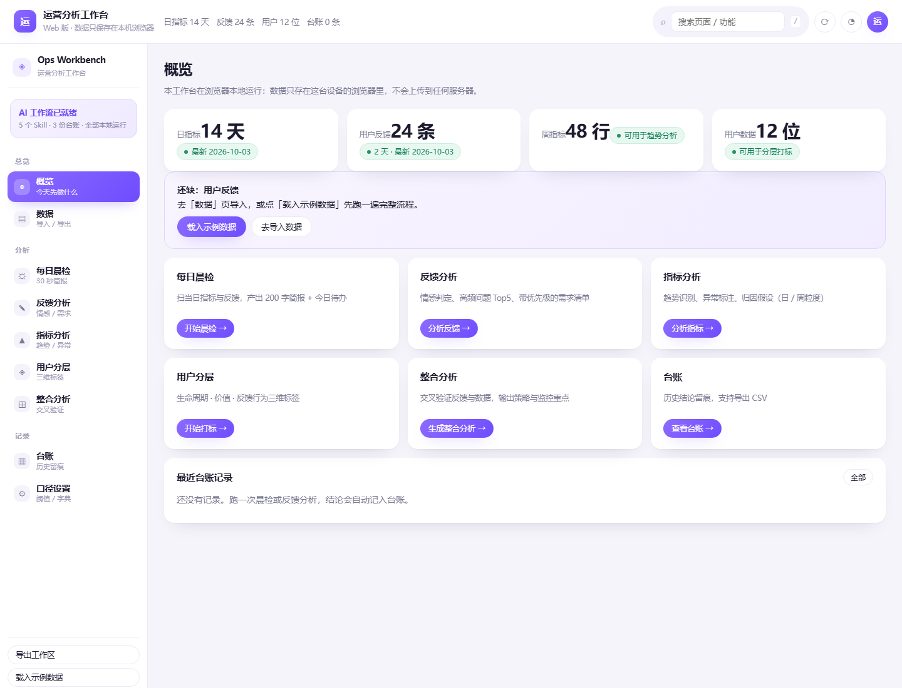
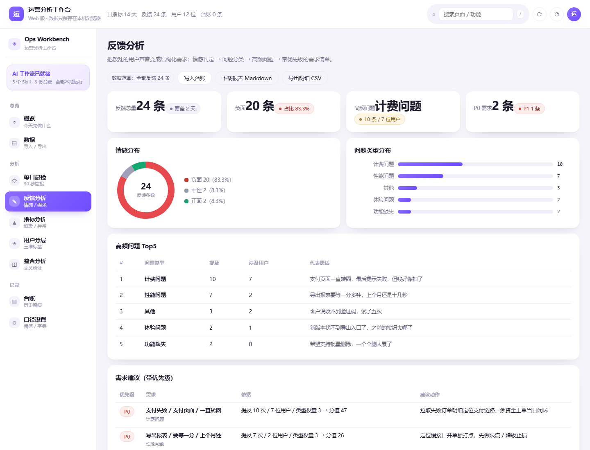
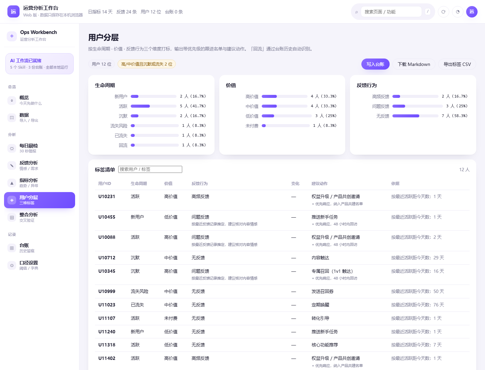
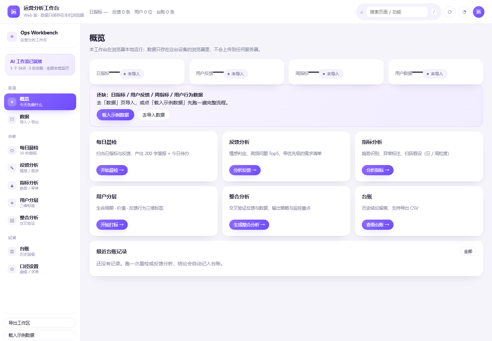
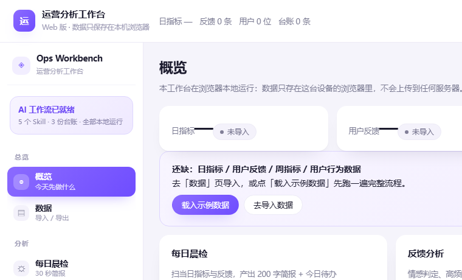

运营日常最耗人的不是判断，而是判断之前的搬运与整理：翻后台导数据、读几十条反馈、手工分类、再拼成一份周报。 工作台的思路是把这些重复动作拆解成可复用的 AI 工作流 —— 看数据、读反馈、打标签、出策略，每一步都由一个独立能力单元承担， 人只负责在关键节点做判断。
运营工作虽然繁杂，但底层动作是固定的：看数据 → 读反馈 → 打标签 → 出策略。每个动作对应一个独立 Skill，互不干扰，按需调用。
日指标用于晨检，快速判断今天先做什么；周指标用于趋势，判断这周发生了什么；月指标用于复盘，判断这个月策略是否有效。不同频率的数据进入不同流程，避免噪声干扰。
反馈分析只能告诉你用户在说什么，指标分析只能告诉你数据在怎么变。两者交叉验证，才能回答用户的声音是否在数据上有印证，从而输出有依据的策略建议。
| Skill | 职责（做什么） | 触发词（怎么说） |
|---|---|---|
| daily-check | 每日晨检：快速扫描当日指标与反馈，输出今日关注与待办 | 今日晨检看看今天的数据 |
| analyze-feedback | 反馈分析：情感判定、问题分类、需求提炼 | 分析反馈提炼需求 |
| analyze-product-metrics | 指标分析：趋势识别、异常标注、归因假设 | 分析数据生成看板 |
| tag-users | 用户打标签：按生命周期、价值、反馈行为三个维度分层 | 打标签用户分层 |
| integrated-report | 整合分析：交叉验证反馈与数据，输出策略建议 | 分析本周运营情况 |
ledger.csv 分析结果台账
metrics-ledger.csv 指标台账
tag-ledger.csv 标签台账
记录每次分析的结论，支持历史查询与趋势追踪，也解决了「首次使用没有基线」的问题。
data/daily/ 日指标 CSV + 日反馈 txt
data/weekly/ 周指标
data/users/ 用户行为数据
数据可从公司后台导出，也可以手动整理后另存为 CSV / txt，格式固定即可直接进流程。
分析动作本质是固定的，因此 Web 版把口径重写成浏览器里的确定性规则引擎：更快、更稳、可复现，且不消耗 token。
九个视图：dashboard / data / check / feedback / metrics / tags / integrated / ledgers / config。
每日放当日指标 CSV 与反馈 txt；每周更新用户行为 CSV。可从后台导出，也可手动整理另存。
CLI 版在 ops-workbench 目录下运行 codex；Web 版直接打开网址。
用自然语言说需求，如「今日晨检」「分析反馈」。路由规则按触发词自动匹配对应 Skill。
按场景拿到简报、需求清单、趋势异常、标签清单或整合策略建议。
| 场景 | 输入 | 输出 | 耗时 | 页 |
|---|---|---|---|---|
| 每日晨检 | 当日指标 + 当日反馈 | 200 字以内简报 + 今日待办 | 约 30 秒 | P04 |
| 反馈处理 | 反馈文本 | 情感分布 + 高频问题 Top5 + 带优先级的需求建议 | 1–2 分钟 | P05 |
| 指标监控 | 指标 CSV | 核心指标概览 + 异常标注 + 归因假设（可选 HTML 看板） | 1–2 分钟 | — |
| 用户分层 | 用户行为 CSV | 标签清单 + 建议动作 | 1–2 分钟 | P06 |
| 整合分析 | 以上全部产出 | 核心发现 + 交叉验证表 + 产品策略建议 + 下周监控重点 | 2–3 分钟 | P07–P08 |
如果输出格式不理想，直接告诉工作台怎么调，然后把新规则追加到对应的 SKILL.md 中。规则一旦沉淀，每次调整后输出就会稳定下来 —— 这是「一次调优、长期复用」的关键。
端到端冒烟测试发现所有「下载 / 导出」按钮点了没反应：按钮写的是 data-dl，而事件处理只读了 data-kind，静默失败。
修复后不只是「点一下不报错」，而是劫持 createObjectURL 与 a.click，逐个断言导出文件名与字节数，把这类静默失败直接钉死在测试里。
当日指标 CSV + 当日反馈 txt（data/daily/），系统自动取上一日指标做环比。
200 字以内简报（今日关注）+ 今日待办清单；异常指标与负面反馈在同一个视图里对照出现。

异常项排在待办最前，避免「先做顺手的事、把风险留到周末」。示例中支付成功率与接口响应被标为异常，直接进入当日待办。
晨检的定位是「看一眼就走」。字数上限迫使输出收敛到结论，细节留给反馈 / 指标 / 整合分析三个专项流程。
日粒度只进日指标，周、月指标不参与晨检；口径里的阈值决定「正常 / 需关注 / 异常」，而不是靠人肉判断幅度。
反馈文本，一行一条：时间 | 渠道 | 用户 | 内容。渠道覆盖客服工单、应用商店、微信社群、微博。
情感分布（正面 / 中性 / 负面占比）+ 高频问题 Top5 + 带优先级（P0 / P1 / P2）的需求建议。

负面词典与正则共同判定（如「要等 XX 秒」「试了 N 次」这类表述单靠词表抓不到），避免把抱怨误判为中性。
按计费 / 性能 / 体验 / 内容 / 功能缺失 / 其他六类归档，每类带严重度权重，决定优先级的底座。
把「希望支持批量删除」这类诉求从抱怨里拆出来，标记为需求类信号 —— 它不该被当成故障处理。
用户行为 CSV（data/users/）：用户 ID、注册日期、最近活跃、行为次数、消费金额、反馈次数、最近反馈、来源渠道、备注。
三维标签（生命周期 / 价值 / 反馈行为）+ 每个用户对应的建议动作，形成后续运营的优先级依据。

新用户 / 活跃 / 沉默 / 流失风险 / 已流失 / 回流，由注册天数、最近活跃天数等阈值自动判定。
高 / 中 / 低价值 / 未付费，按累计消费金额分层。价值决定投入力度，生命周期决定触达方式。
高频反馈 / 问题反馈 / 正面反馈 / 无反馈。高频反馈用户进入产品共建名单，问题反馈承诺 48 小时内回访。
| # | 用户声音（反馈结论） | 数据证据（指标结论） | 结论 |
|---|---|---|---|
| 1 | 计费问题：10 条 / 7 位用户。如「支付页面一直转圈，最后提示失败，但钱好像扣了」 | 支付成功率(%) 93.4（异常，环比 −2.6%）；退款率(%) 3.2（异常，环比 +52.4%）；订单转化率(%) 2.86（需关注，环比 −5.3%） | ✅ 印证 |
| 2 | 性能问题：7 条 / 2 位用户。如「导出报表要等一分多钟，上个月还是十几秒」 | 接口平均响应时长(ms) 2050（异常，环比 +9%）；核心功能使用率(%) 40.5（正常，环比 −2.4%） | ✅ 印证 |
| 3 | 其他：3 条 / 2 位用户。如「客户说收不到验证码，试了五次」 | 口径中未映射相关指标（属需求类信号，不体现在短期指标上） | ❓ 无法判断 |
| 4 | 体验问题：2 条 / 1 位用户。如「新版本找不到导出入口了，之前的按钮去哪了」 | 核心功能使用率(%) 40.5（正常）；次日留存率(%) 34.8（需关注，环比 −2.5%） | ✅ 印证 |
| 5 | 功能缺失：2 条 / 0 位用户。如「希望支持批量删除，一个个删太累了」 | 口径中未映射相关指标（属需求类信号，建议用需求排期跟踪而非指标） | ❓ 无法判断 |
| 6 | 反馈侧无对应声音 | 负面反馈数 14（异常） | ⚠️ 背离 |
| 7 | 反馈文件里判定为负面 8 条（2026-10-02） | 指标「负面反馈数」记录 13 条 | ❓ 无法判断 |
| 8 | 反馈文件里判定为负面 12 条（2026-10-03） | 指标「负面反馈数」记录 14 条 | ❓ 无法判断 |
| 周指标 | W33 起点 | W40 当前 | 变化 | 与日线结论的关系 |
|---|---|---|---|---|
| 支付成功率(%) | 97.8 | 93.4 | −4.4 | 与「连续 8 期下降」指向同一件事 |
| 退款率(%) | 1.4 | 3.2 | +1.8 | 支付链路问题的下游后果 |
| 订单转化率(%) | 3.20 | 2.86 | −0.34 | 用户卡在支付环节，转化被拖住 |
| 核心功能使用率(%) | 42.3 | 40.5 | −1.8 | 对应体验问题（入口找不到） |
| 次日留存率(%) | 36.4 | 34.8 | −1.6 | 体验受损后的留存滞后反应 |
| 优先级 | 动作 | 依据 | 验证方式 |
|---|---|---|---|
| P0 | 拉取失败订单明细定位支付链路，涉资金工单当日闭环 | 计费问题：提及 10 次 / 7 位用户，如「支付页面一直转圈，最后提示失败，但钱好像扣了」 | 下周支付成功率 ≥ 97%、退款率 ≤ 2.0%，且涉资金工单归零 |
| P0 | 定位慢接口并单独打点，先做限流 / 降级止损 | 性能问题：提及 7 次 / 2 位用户，如「导出报表要等一分多钟，上个月还是十几秒」 | 接口响应 P95 连续 3 天 ≤ 1500ms，导出平均耗时回到 20 秒内 |
| P1 | 复核入口与文案，必要时热修复并回访 | 体验问题：提及 2 次 / 1 位用户，如「新版本找不到导出入口了」 | 核心功能使用率回升至 ≥ 40%，入口相关反馈归零 |
| P1 | 针对支付成功率做专项排查与回归验证 | 连续 8 期下降，起点 97.7 → 当前 93.2 | 下周该指标回到正常区间 |
| 指标 | 阈值 | 触发动作 |
|---|---|---|
| 退款率(%) | ≤ 2 | 拉失败明细并排查支付链路 |
| 接口平均响应时长(ms) | ≤ 1500 | 定位慢接口 |
| 负面反馈数 | ≤ 5 | 按归因假设逐条验证 |
| 支付成功率(%) | ≥ 97 | 拉失败明细并排查支付链路 |
| 类型 | 具体 | 处理方式 |
|---|---|---|
| 需求类信号 （2 条） | 收不到验证码（3 条 / 2 位用户）；希望支持批量删除（2 条） | 进需求排期跟踪，不用短期指标衡量 |
| 口径不一致 （2 条） | 10-02：反馈判负 8 条 vs 指标 13 条；10-03：反馈判负 12 条 vs 指标 14 条 | 先对齐反馈导出范围与负面判定标准，再谈趋势 |
分析动作本质固定，规则引擎比每次等模型推理更快、更稳、可复现，而且不消耗 token。AI 解读作为可选能力保留：Key 只存本机，用不用由使用者决定。
解析行数、情感占比、问题分类、异常判定、简报字数上限、标签三维、交叉验证三类结论，全部有断言；导出的文件名与字节数也在测试里逐个核对。
点「载入示例数据」先跑通一遍，或直接上传自己的指标 CSV / 反馈 txt / 用户行为 CSV。
按触发词跑晨检或反馈分析，对照输出检查是否符合你自己的口径与汇报格式。
口径不对就到 config 视图改阈值与关键词，输出格式不对就调整规则；改完规则稳定下来，后续复用。

